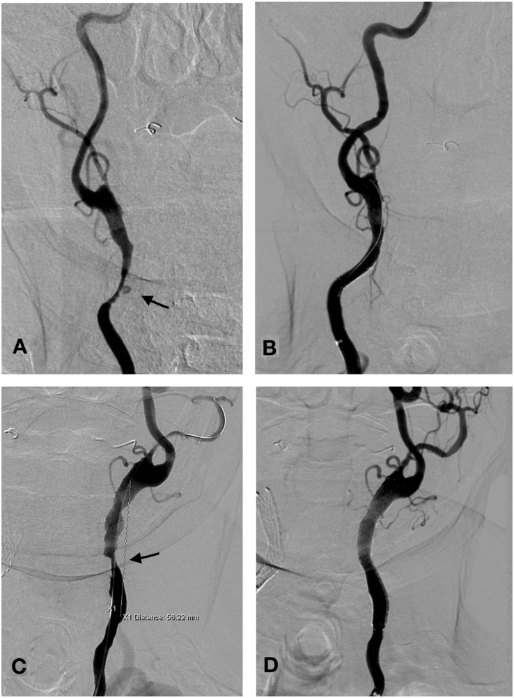
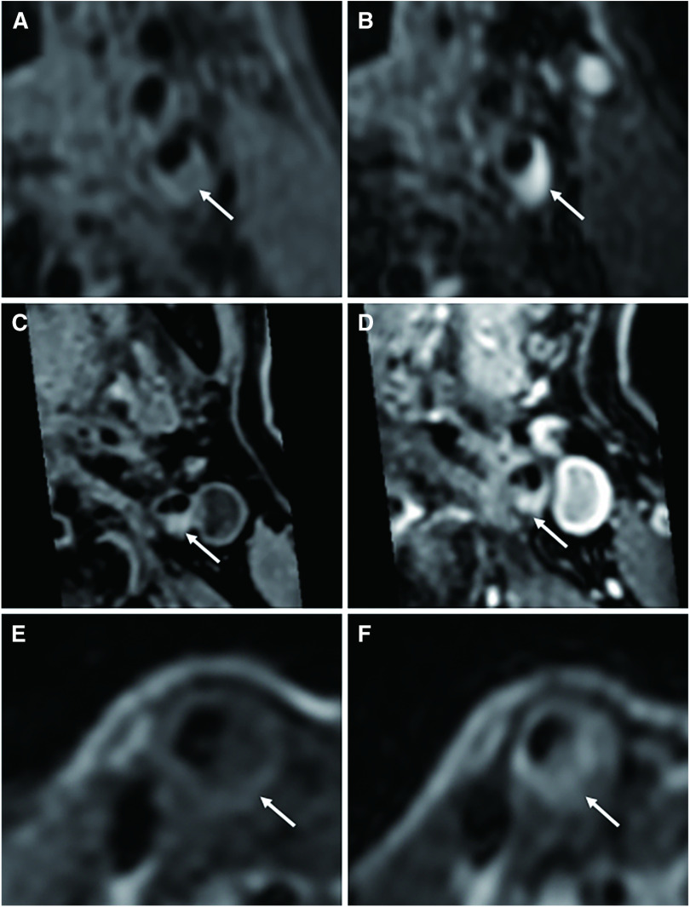

260 — Bệnh mạch cảnh do xạ trị đầu cổ: hẹp–tắc dài, nhẵn, không vôi / Radiation-induced carotid stenosis (RICS)
Tags: pattern:hep-mach pattern:tac-mach pattern:hep-dai-doan pattern:it-voi-hoa pattern:loet-mang-xo-vua pattern:nhieu-o vung:dong-mach-canh vung:dau-co score:NASCET score:PSV-DUS protocol:SA-Doppler protocol:CTA-MRA protocol:MRI-mang-xo-den protocol:DSA
Mức chắc chắn (certainty): tổng hợp y văn (literature synthesis) — 1 phân tích gộp 16 nghiên cứu ở bệnh nhân ung thư vòm họng (Braz J Otorhinolaryngol 2022, PMC9756067), 1 đoàn hệ 907 bệnh nhân ung thư đầu cổ (PLoS One 2025, PMC11781643), 1 đoàn hệ so sánh CEA–CAS có ghép cặp 43 ca RICS (Ann Surg Treat Res 2022, PMC9365643), 1 loạt 26 ca có can thiệp (Transl Oncol 2019, PMC6542749), 1 nghiên cứu MRI mảng xơ (J Neuroendovasc Ther 2022, PMC10370715), 1 ca nguyên văn stent ngắn lại trong 24 giờ (Front Neurol 2023, PMC10203154) và 1 tổng quan điều trị hẹp cảnh cập nhật 2026 (Front Stroke 2026, PMC13343524). Không có thử nghiệm ngẫu nhiên riêng cho RICS; các ngưỡng can thiệp là mượn từ hẹp cảnh xơ vữa, chỗ suy luận được ghi rõ.
Câu chốt: RICS là hẹp cảnh NGOÀI SỌ trong trường chiếu cũ, khác xơ vữa ở ba điểm: (1) dài và nhiều ổ — đoạn hẹp CCA trung bình 31,16 ± 10,60 mm trong loạt chính, và 32,8 ± 30,0 mm so với 6,9 ± 5,1 mm ở hẹp xơ vữa trong loạt so sánh của Sano; (2) ít viêm, nhiều xơ — mô bệnh học "less inflammatory and more fibrotic", mảng xơ mềm, ít vôi hóa, loét 14/26 (54%) trong loạt có triệu chứng; (3) đến MUỘN và âm thầm — trung vị 10 năm tới đột quỵ ở bệnh nhân xạ 60–70 Gy, nguy cơ hẹp nặng tăng 8,5 lần nếu đã xạ > 5 năm. Ba con số phải thuộc: xạ đầu cổ làm tăng hẹp có ý nghĩa RR 7,06 (3,61–13,79); 25–26% người sống sót có hẹp > 50%, 12% hẹp > 70%; và tầm soát Doppler từ 1 năm sau xạ, lặp 3–5 năm (ICOS 2021) — vì bỏ sót nghĩa là để một đột quỵ có thể phòng được xảy ra ở người còn nhiều năm sống.
1. Tổng quan bệnh học – cơ chế hình ảnh
1.1 Bệnh học: xơ hóa thành mạch do xạ, không phải mảng xơ vữa điển hình
- Định nghĩa thực hành: RICS = hẹp > 50% động mạch cảnh ở bệnh nhân đã xạ vùng cổ để điều trị ung thư, xuất hiện sau một khoảng tiềm tàng (latency) nhiều tháng đến nhiều năm (Ann Surg Treat Res 2022, PMC9365643).
- Chuỗi tổn thương 4 bước (tổng hợp từ PMC6542749 và PMC9365643):
- Tổn thương nội mô + tế bào cơ trơn do bức xạ → apoptosis, viêm, stress oxy hóa.
- Tổn thương vasa vasorum + xơ hóa lớp áo ngoài → thành mạch thiếu máu nuôi, xơ cứng, dính vào mô cổ xung quanh.
- Tăng sinh nội mạc + lắng lipid → mảng xơ dài, lan dọc, bờ nhẵn, nhiều ổ (multifocal), ít vôi hóa.
- Loét bề mặt + huyết khối tại chỗ → nguồn tắc mạch (embolic source), dù mảng xơ về mô học ít viêm hơn mảng xơ vữa thường.
- Vì sao "ít viêm, nhiều xơ" lại quan trọng trên ảnh: thành mạch xơ → dính, khó bóc khi mổ hở, không có vôi hóa để làm mốc, và mảng xơ có thể mềm, dễ vỡ khi can thiệp. So sánh mô bệnh học của Fokkema (trích trong PMC6542749): tổn thương sau xạ ít tế bào viêm, nhiều collagen hơn mảng xơ vữa không xạ.
- Chiều dài — dấu hiệu định lượng mạnh nhất trên hình ảnh: trong 26 ca có triệu chứng, đoạn hẹp ICA trung bình 19,16 ± 3,42 mm, CCA 31,16 ± 10,60 mm; loạt của Sano so sánh CCA 32,8 ± 30,0 mm (xạ) với 6,9 ± 5,1 mm (xơ vữa) — chênh gần 5 lần (PMC6542749). Hẹp xơ vữa điển hình khu trú một ổ ở chỗ chia đôi/đoạn đầu ICA, còn RICS lan dọc CCA và nhiều đoạn.
- Latency: loạt có triệu chứng 27–50 tháng (trung bình 45,2 tháng) sau xạ 58–70 Gy (trung bình 62 Gy) (PMC6542749). Ngoài ra: nguy cơ hẹp nặng 8,5 lần nếu xạ > 5 năm; Brown thấy nguy cơ chỉ tăng rõ sau 10–15 năm; Dorresteijn báo trung vị 10 năm tới đột quỵ (dẫn trong PMC6542749). Phân tích gộp ghi khoảng cách xạ 0,3–30 năm (PMC9756067) — nghĩa là không có "cửa sổ an toàn".
- Liều và thể tích: liều trung bình trong đoàn hệ 907 ca là 69,30 ± 24,29 Gy (PMC11781643); hướng dẫn COG dùng mốc ≥ 40 Gy vào cổ để chỉ định siêu âm cảnh 10 năm sau xạ (dẫn trong PMC10627489). Các nghiên cứu liều–đáp ứng cho thấy V10–V70 Gy của cảnh đều liên quan tới hẹp cảnh không triệu chứng (PMC11781643) — tức ngưỡng liều thấp hơn ta tưởng.
- Dịch tễ — vì sao đáng làm bài riêng: xạ đầu cổ làm tăng gấp đôi nguy cơ TIA/đột quỵ thiếu máu (tổng quan 99 nghiên cứu, dẫn trong PMC6542749); ở bệnh nhân ung thư vòm họng, phân tích gộp 16 nghiên cứu cho RR 3,53 cho mọi mức hẹp và RR 7,06 cho hẹp có ý nghĩa (PMC9756067). Đoàn hệ 907 ca Thái Lan: đột quỵ/TIA 1,98%, tích lũy 1,65% sau 5 năm; hẹp mới > 50% tích lũy 1,3% / 2,2% / 2,5% ở 12 / 24 / 36 tháng (PMC11781643).
1.2 Cơ chế hình ảnh — TẠI SAO RICS trông như vậy
- CT: mảng xơ xơ hóa ít cản quang hơn vôi; vì vậy RICS thường không có "đốm trắng" vôi hóa dễ thấy ở chỗ chia đôi. CTA đo được chiều dài tổn thương và đường kính lòng mạch — hai biến số quyết định chọn stent.
- Siêu âm Doppler (DUS): mảng xơ giảm hồi âm, bờ nhẵn, dài; vôi hóa ít → không bị "che" bóng, nhưng cũng không có mốc sáng để đo. Tốc độ đỉnh tâm thu (PSV) > 230 cm/s kèm tỉ số ICA/CCA > 4,0 là ngưỡng dùng trong loạt RICS để gọi hẹp ≥ 70% (PMC9365643).
- MRI mảng xơ (black-blood): T1 cao phản ánh xơ, lipid, hoại tử hoặc máu trong mảng; T2 cao phản ánh lipid/hoại tử. Ở RICS, tỉ số tín hiệu T2 so với cơ ức đòn chũm cao hơn hẹp xơ vữa (p = 0,0381), phù hợp với lõi hoại tử nhiều hơn — và đây là lý do tái hẹp sau stent cao hơn (PMC10370715).
- Vì sao hẹp lại gây đột quỵ dù mảng "xơ": hẹp làm giảm áp lực tưới máu xa (nhồi máu vùng ranh giới khi huyết áp tụt) và loét bề mặt giải phóng huyết khối (tắc mạch). Trong loạt 26 ca, 14 ca có loét bề mặt và 20 ca TIA, 6 ca đột quỵ (PMC6542749) — hình ảnh loét là dấu hiệu nguy cơ, không phải chi tiết phụ.
2. Mẫu hình + chẩn đoán phân biệt theo vị trí (gamut)
2.1 Theo vị trí trong trường chiếu
- CCA (thân chung): tổn thương dài nhất, thường hẹp nhẵn lan dọc, có thể giãn đoạn gần (post-stenotic dilatation) — loạt 26 ca: CCA 58%. Đây là vị trí dễ bị bỏ sót trên DUS nếu chỉ đo chỗ chia đôi.
- Chỗ chia đôi + đoạn đầu ICA: hẹp khu trú hoặc lan xuống CCA; ICA 85% trong loạt trên. Dễ nhầm với xơ vữa nhất, vì cùng vị trí.
- ECA: 58% trong loạt; thường hẹp lỗ vào ECA kèm hẹp CCA. Ít gây đột quỵ trực tiếp nhưng làm hẹp nguồn bàng hệ khi ICA tắc — quan trọng khi tắc ICA đối bên.
- Động mạch dưới đòn: 19% trong loạt 26 ca (PMC6542749) — phải khảo sát khi siêu âm, vì hẹp dưới đòn làm sai lệch PSV và gây hội chứng cướp dưới đòn.
- Hai bên: RICS có thể một bên (đúng trường chiếu) hoặc hai bên không đối xứng; tắc ICA đối bên gặp nhiều hơn hẹp xơ vữa (16,2% vs 0 trong loạt ghép cặp, PMC9365643) — đây là chống chỉ định tương đối của mổ hở và là lý do ưu tiên stent.
2.2 Gamut theo hình thái (nhìn ảnh mà nghĩ)
- Hẹp dài, nhẵn, một hoặc nhiều ổ, không vôi: RICS (ưu tiên số 1 khi có tiền sử xạ cổ); viêm mạch lớn (Takayasu, GCA — thường có dày thành đồng tâm, ngấm thuốc); loạn sản cơ xơ (FMD) — "chuỗi hạt" ở ICA giữa, không dài nhẵn; bóc tách — vạt nội mạc, giả lòng.
- Hẹp khu trú + vôi hóa nặng + loét: xơ vữa thông thường (nhưng RICS vẫn có thể loét — đừng loại vì có loét).
- Hẹp + phình/giả phình + chảy máu cam tái diễn: vỡ giả phình do xạ (carotid blowout) — bệnh cảnh cấp cứu khác, xem bài 3046.
- Hẹp + hẹp nội sọ kèm mạng bàng hệ: bệnh mạch máu lớn nội sọ do xạ/moyamoya do xạ — xem bài 262; có thể đồng thời với RICS.
2.3 Gợi nhớ R-A-D-I-O
Radiation field (vị trí đúng trường chiếu) · Age/interval (nhiều năm sau xạ) · Diffuse long lesion (dài, nhiều ổ) · Inflammation-poor/fibrotic (ít viêm, nhiều xơ) · Occlusion/ulcer (tắc hoặc loét bề mặt).
3. Bảng so sánh phân biệt (ma trận đối chiếu)
| Thực thể (entity) | Hình ảnh điển hình (DUS/CTA/MRI) | Chốt vào (rule-in) | Chốt loại (rule-out) | Gợi ý xác nhận |
|---|---|---|---|---|
| RICS | Hẹp dài (CCA ≥ 30 mm), nhẵn, nhiều ổ, ít vôi, đúng trường chiếu; có thể loét; tắc ICA đối bên | Tiền sử xạ cổ + tổn thương dài/nhiều ổ trong trường chiếu + latency ≥ 2 năm | Vôi hóa nặng khu trú đúng chỗ chia đôi, không tiền sử xạ → nghĩ xơ vữa | CTA/CE-MRA đo chiều dài; DUS PSV > 230 cm/s + tỉ số > 4,0; MRI mảng xơ |
| Xơ vữa cảnh | Khu trú chỗ chia đôi/đoạn đầu ICA, vôi hóa, mảng không đều, thường một ổ | Vôi hóa + khu trú + yếu tố nguy cơ kinh điển (tuổi, THA, ĐTĐ, hút thuốc, rối loạn lipid) | Tổn thương dài lan CCA + ít vôi + đúng trường xạ → RICS | DUS + CTA; không cần sinh thiết |
| Takayasu/GCA (viêm mạch lớn) | Dày thành đồng tâm, ngấm thuốc, hẹp dài nhiều đoạn, thường hai bên; GCA ở người > 50 tuổi | Dày thành > 1 mm đồng tâm + ngấm thuốc + triệu chứng viêm (CRP, đau đầu, thị lực) | Không dày thành, không ngấm thuốc → không phải viêm mạch hoạt động | MRI/CTA thành mạch + CRP/VS; PET-CT nếu cần |
| Loạn sản cơ xơ (FMD) | "Chuỗi hạt" (string of beads) ICA giữa/cổ, không dài nhẵn, thường nữ trẻ | Chuỗi hạt điển hình + không tiền sử xạ | Hẹp dài nhẵn một đoạn → không phải FMD | CTA/DSA; FMD không can thiệp stent thường quy |
| Bóc tách cảnh | Vạt nội mạc, giả lòng, hẹp hình nón ("flame"), đau cổ + Horner | Vạt/giả lòng + khởi phát cấp | Hẹp nhẵn mạn, không vạt → không bóc tách | CTA/MRA thì mạch; MRI T1 fat-sat thành mạch (máu trong thành) |
| Giả phình/blowout do xạ | Túi phình trong trường xạ, có thể vôi hóa vỏ, chảy máu cam ồ ạt | Túi phình + chảy máu cam tái diễn | Chỉ hẹp lòng, không túi → RICS đơn thuần | CTA mạch máu cấp cứu, DSA |
3.1 Đọc đúng "dài – nhẵn – ít vôi": ba dấu hiệu, một chẩn đoán
- Dài: đo chiều dài đoạn hẹp trên CTA/CE-MRA, không chỉ đo % đường kính. ≥ 20 mm ở ICA hoặc ≥ 30 mm ở CCA là gợi ý mạnh cho RICS (ngưỡng suy luận từ phân bố của loạt 26 ca: ICA 19,16 mm, CCA 31,16 mm; PMC6542749).
- Nhẵn: bờ trong đều, không có mảng vôi lồi; nhưng có thể loét — loét là dấu hiệu nguy cơ, không loại RICS.
- Ít vôi: đừng dùng "không thấy vôi" để loại xơ vữa ở người trẻ; hãy dùng tiền sử xạ + chiều dài + nhiều ổ.

Bốn ô: (A) CCA phải — hẹp nặng + loét giữa đoạn (mũi tên), hẹp tới lỗ ECA; (B) sau đặt stent, lòng mạch thông; (C) CCA trái — hẹp dài tới mức tới hạn, đoạn hẹp 56,22 mm; (D) sau stent. Ảnh nguyên bản, không crop/ghép: Transl Oncol 2019, Fig. 1 — PMC6542749, CC BY-NC-ND 4.0.
T1 (A, C, E) và T2 (B, D, F) black-blood: mũi tên chỉ mảng xơ. Ở RICS, tỉ số tín hiệu T2/cơ ức đòn chũm cao hơn hẹp xơ vữa (p = 0,0381), phù hợp lõi hoại tử và nguy cơ tái hẹp. Ảnh nguyên bản: J Neuroendovasc Ther 2022, Fig. 1 — PMC10370715, CC BY-NC-ND 4.0.4. Protocol chụp + tầm soát + phân độ
4.1 Ai chụp, khi nào
- Mọi bệnh nhân xạ đầu cổ (vòm họng, thanh quản, hạ họng, tuyến giáp, hạch cổ) — không chỉ ung thư vòm họng. Đoàn hệ 907 ca: ung thư thanh quản là yếu tố nguy cơ độc lập cho hẹp mới (aHR 2,36; 1,01–5,55), cùng tuổi > 65 (aHR 2,60; 1,28–5,30) và tổng điểm mảng xơ (aHR 1,38; 1,23–1,56) (PMC11781643).
- Tầm soát bằng DUS: theo ICOS 2021, đánh giá nguy cơ + DUS sớm nhất 1 năm sau xạ, sau đó lặp mỗi 3–5 năm; ESVS 2023 khuyến cáo DUS hằng năm cho hẹp 50–60% không triệu chứng; COG khuyến cáo DUS 10 năm sau xạ nếu ≥ 40 Gy vào cổ (dẫn trong PMC11781643 và PMC10627489).
- Vì sao tầm soát có ý nghĩa: tầm soát có hiệu quả chi phí khi tỉ lệ mắc ≥ 20%, và hai phân tích gộp cho thấy tỉ lệ hẹp > 50% ở người xạ đầu cổ > 20% (25–26%), hẹp > 70% 12%, tắc hoàn toàn 4% (dẫn trong PMC11781643).
- Khi đã có triệu chứng (TIA, đột quỵ, amaurosis): CTA/CE-MRA ngay, không chờ DUS.
4.2 Giao thức hình ảnh
- DUS (đầu tay): B-mode + Doppler màu + xung; đo PSV ở ICA, CCA, tỉ số ICA/CCA, chiều dài mảng xơ, đặc điểm mảng (hồi âm, loét). Ngưỡng hẹp ≥ 70%: PSV > 230 cm/s + tỉ số > 4,0 (PMC9365643). Lưu ý: hẹp dài làm PSV không tăng tương ứng — luôn đo nhiều điểm và ghi chiều dài.
- CTA: lát ≤ 1 mm, MIP + MPR cong (curved MPR) dọc trục mạch; đo % NASCET (đường kính lòng hẹp nhất / đường kính ICA xa bình thường), chiều dài, vôi hóa, loét, tắc đối bên. CTA là bắt buộc trước can thiệp để chọn đường kính và chiều dài stent.
- CE-MRA/TOF-MRA: khi suy thận hoặc cần tránh iod; MRA thành mạch đánh giá dày thành/ngấm thuốc (viêm mạch) và mảng xơ.
- MRI black-blood mảng xơ: T1/T2 ± gadolinium; T2 cao gợi ý lõi hoại tử, liên quan tái hẹp (PMC10370715). Không dùng để quyết định mổ đơn thuần, nhưng hữu ích khi hẹp mức trung gian hoặc theo dõi sau stent.
- DSA: chuẩn vàng khi kết quả không hòa hợp, trước CAS, hoặc khi nghi giả phình/blowout.
4.3 Phân độ và ngưỡng xử trí
- NASCET là thang dùng chung: hẹp ≥ 70% = nặng; 50–69% = trung bình; < 50% = nhẹ. Với RICS, đa số bệnh nhân đến muộn đã ≥ 70% (loạt ghép cặp: 97,9% vs 86,7% ở hẹp xơ vữa; PMC9365643).
- Chỉ định can thiệp (mượn từ hẹp cảnh xơ vữa, SVS): có triệu chứng ≥ 50%, không triệu chứng ≥ 70%. Ở RICS, ưu tiên CAS vì cổ đã xạ → mổ hở khó, nguy cơ tổn thương dây thần kinh sọ và lành thương kém; CEA vẫn chấp nhận được nếu chọn lọc (43 ca RICS: CAS 77,1%, giải phẫu không thuận lợi cho CEA 16,2% vs 0%; không khác biệt kết cục thần kinh, nhưng tái hẹp > 50% chỉ gặp sau CAS; PMC9365643).
- Kết quả can thiệp: loạt 26 ca, 46 stent (25 ICA, 17 CCA), không có biến cố mạch máu não trong 24 tháng; DUS 6 và 12 tháng không tái hẹp ở 24 ca theo dõi (PMC6542749). Ngược lại, y văn ghi tái hẹp sau CAS ở người xạ tới 75% trong 3 năm (so với 20% không xạ), một loạt khác 21% ở trung bình 28 tháng (dẫn trong PMC6542749) — theo dõi DUS sau stent là bắt buộc.
- Bối cảnh 2025–2026: CREST-2 cho thấy stent + điều trị nội khoa tối ưu tốt hơn nội khoa đơn thuần ở hẹp không triệu chứng (2,8% vs 6,0% ở 4 năm, p = 0,02, NNT 31) (PMC13343524) — nhưng không có dữ liệu riêng cho RICS; quyết định vẫn cá thể hóa.
flowchart TD
A[Bệnh nhân đã xạ đầu cổ] --> B{Đã có triệu chứng TIA/đột quỵ?}
B -->|Có| C[CTA hoặc CE-MRA ngay]
B -->|Không| D[DUS sớm nhất 1 năm sau xạ]
D --> E{Hẹp ≥ 50%?}
E -->|Không| F[Lặp DUS mỗi 3–5 năm + kiểm soát yếu tố nguy cơ]
E -->|Có| G[CTA/CE-MRA xác nhận NASCET + chiều dài]
G --> H{Triệu chứng?}
H -->|Có, ≥ 50%| I[Can thiệp: ưu tiên CAS]
H -->|Không, ≥ 70%| J[Bàn can thiệp CAS + nội khoa tối ưu]
H -->|Không, 50–69%| K[Nội khoa + DUS hằng năm]
I --> L[DUS 1–6–12 tháng, sau đó hằng năm]
J --> L
5. Biến thể bình thường và cạm bẫy
- Xơ hóa mô cổ sau xạ làm hẹp "giả" trên DUS: mô xơ cứng quanh mạch đè ép và làm mất mặt phẳng mỡ; đừng đo bằng đầu dò ấn mạnh — dùng gel đệm, đo hai bình diện, đối chiếu CTA nếu tốc độ không khớp mức hẹp.
- Hẹp dài → PSV thấp giả: dòng chảy có thể không đạt > 230 cm/s dù hẹp nặng vì giảm lưu lượng toàn bộ (tắc đối bên, hẹp dưới đòn). Chốt bằng CTA, không loại hẹp nặng chỉ vì PSV thấp.
- Vôi hóa ít ≠ không phải RICS: ngược lại, vôi hóa nặng khu trú ở người không tiền sử xạ mới là xơ vữa. Đừng dùng "không vôi" để loại xơ vữa, cũng đừng dùng "có vôi" để loại RICS.
- Stent ngắn lại trong 24 giờ: ca 67 tuổi, cảnh hình nón (CCA xa 7,63 mm, ICA xa 4,41 mm, lòng hẹp 0,56 mm), đặt Wallstent 8 × 36 mm, CTA ngày hôm sau thấy stent trượt xuống, hở đoạn hẹp → phải đặt stent thứ hai (PMC10203154). Bài học: RICS dài + mạch hình nón → chọn stent đường kính theo đoạn xa, chiều dài dư, và kiểm tra CTA/DSA ngay sau thủ thuật thay vì tin "thành công kỹ thuật".
- Tái hẹp trong stent: đừng đọc tái hẹp là "bệnh tiến triển" rồi đặt stent lần hai mù; DUS + CTA phân biệt tăng sinh nội mạc (đều, trong stent) với mảng xơ mới (ngoài stent).
- Bỏ sót tổn thương thứ hai: RICS nhiều ổ — sau khi can thiệp một bên, luôn khảo sát CCA/ECA/dưới đòn đối bên; trong loạt 26 ca, 5 ca có hẹp dưới đòn và nhiều ca hẹp ECA (PMC6542749).
- Đừng quên nội sọ: bệnh nhân xạ vòm họng có thể đồng thời hẹp cảnh ngoài sọ và bệnh mạch lớn nội sọ/moyamoya do xạ (bài 262) — hạ huyết áp mạnh khi mổ có thể gây nhồi máu ranh giới.
6. Tự lượng giá — Blind Quiz
Ca 1 — Nam 63 tuổi, đã mổ + xạ ung thư thanh quản 52 tháng trước, hiện yếu nửa người thoáng qua.
- Gợi ý: nhìn ô A (trước can thiệp) và ô B (sau can thiệp).
- Câu hỏi: (1) Mô tả hình thái hẹp (dài/ngắn, nhẵn/gồ ghề, có loét?); (2) Ba chẩn đoán phân biệt; (3) Dấu hiệu nào chốt RICS thay vì xơ vữa?
Bấm để hiện đáp án (findings + chẩn đoán)
- Findings: CCA phải hẹp nặng, dài, bờ nhẵn, có ổ loét giữa đoạn (mũi tên); hẹp tới lỗ ECA. Sau stent (B), lòng mạch thông rộng, không còn hẹp.
- Chẩn đoán: RICS — tiền sử xạ 52 tháng + hẹp dài/nhẵn trong trường chiếu + loét; loét giải thích TIA (nguồn tắc mạch).
- Vì sao không phải xơ vữa đơn thuần: xơ vữa điển hình khu trú chỗ chia đôi, vôi hóa, một ổ; ở đây tổn thương lan dọc CCA, không vôi, đúng trường xạ.
- Nguồn ảnh: Transl Oncol 2019, Fig. 1 — PMC6542749, CC BY-NC-ND 4.0 (nguyên bản).
Ca 2 — Nam 73 tuổi, xạ ung thư thanh quản, hẹp cảnh trái được stent; 3 năm sau khám lại.
- Gợi ý: so T1 (C, E) với T2 (D, F); chú ý tỉ số tín hiệu so với cơ ức đòn chũm.
- Câu hỏi: (1) Mảng xơ nằm ở đâu? (2) T2 cao gợi ý thành phần gì? (3) Vì sao điều này quan trọng sau stent?
Bấm để hiện đáp án
- Findings: mũi tên chỉ mảng xơ dày ở thành cảnh; T2 (D, F) tăng tín hiệu so với cơ ức đòn chũm, trong khi T1 (C, E) không tương ứng.
- Diễn giải: T2 cao = lipid/hoại tử (lõi hoại tử), không phải máu cấp; ở RICS tỉ số T2/cơ ức đòn chũm cao hơn hẹp xơ vữa (p = 0,0381), phù hợp mô bệnh lõi hoại tử.
- Vì sao quan trọng: RICS có nguy cơ tái hẹp cao (tới 75% trong 3 năm ở một số loạt), nên theo dõi DUS/CTA sau stent; MRI mảng xơ giúp giải thích cơ chế và chọn chiến lược.
- Nguồn ảnh: J Neuroendovasc Ther 2022, Fig. 1 — PMC10370715, CC BY-NC-ND 4.0 (nguyên bản).
Ca 3 — Câu hỏi ngắn (không cần ảnh): Bệnh nhân 60 tuổi xạ vòm họng 2 năm, không triệu chứng. DUS: PSV 190 cm/s, không thấy vôi, hẹp dài 25 mm ở CCA. Xử trí?
Bấm để hiện đáp án
- Không loại hẹp nặng chỉ vì PSV 190 cm/s — hẹp dài có thể làm PSV thấp giả. Cần CTA/CE-MRA đo NASCET + chiều dài.
- Nếu 50–69% không triệu chứng: nội khoa tối ưu + DUS hằng năm (ESVS 2023); nếu ≥ 70%: bàn can thiệp CAS (ưu tiên stent ở cổ đã xạ).
- Tầm soát tiếp tục 3–5 năm/lần theo ICOS 2021 dù lần này chưa can thiệp.
Bài liên quan chéo
- 262 – Bệnh mạch máu LỚN nội sọ do xạ (moyamoya do xạ) — tổn thương trong sọ cùng cơ chế, khác vị trí và xử trí.
- 3046 – Chảy máu cam ồ ạt do vỡ giả phình cảnh trong (carotid blowout) — biến chứng cấp cứu của xạ vùng cổ.
- 259 – Hội chứng SMART sau xạ não · 261 – Bệnh não chất trắng do xạ — di chứng xạ thần kinh khác.
- 093 – Chèn ép tĩnh mạch chủ trên — can thiệp mạch vùng cổ–trung thất.
Ảnh
260_hep-canh-do-xa_DSA_PMC6542749-F1.jpg— DSA 4 ô, CC BY-NC-ND 4.0, nguyên bản.260_mang-xo-vua-xa_MRI_PMC10370715-F1.jpg— MRI black-blood 6 ô, CC BY-NC-ND 4.0, nguyên bản.- Không tạo ảnh ghép: cả hai nguồn CC BY-NC-ND (cấm phái sinh).
Không dùng để chẩn đoán độc lập khi chưa có người hướng dẫn.